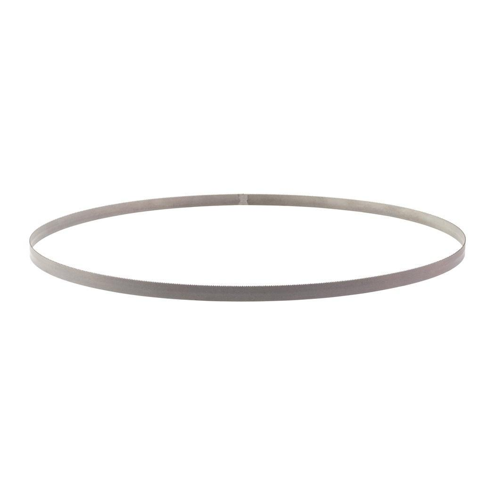

<h1>Milwaukee | 1139.83 mmx 18Tpi - 3pcs Band saw Blade M18FBS127</h1><p>48390521</p><div style="display:flex;flex-wrap:wrap;gap:8px"></div><h4>Features</h4><ul><li>Suitable for cutting: Angle iron, galvanised pipe and even tougher steels such as cast iron and stainless steel.</li></ul><h4>Information</h4><table><tr><td>Material wall thickness (mm)</td><td>4 - 5</td></tr><tr><td>Materials suited for</td><td>Angle Iron|Galvanised Pipe|Stainless steel|Cast Iron</td></tr><tr><td>Max. capacity (mm)</td><td>4 - 5</td></tr><tr><td>Pack quantity</td><td>3</td></tr><tr><td>Total length (mm)</td><td>1140</td></tr></table>